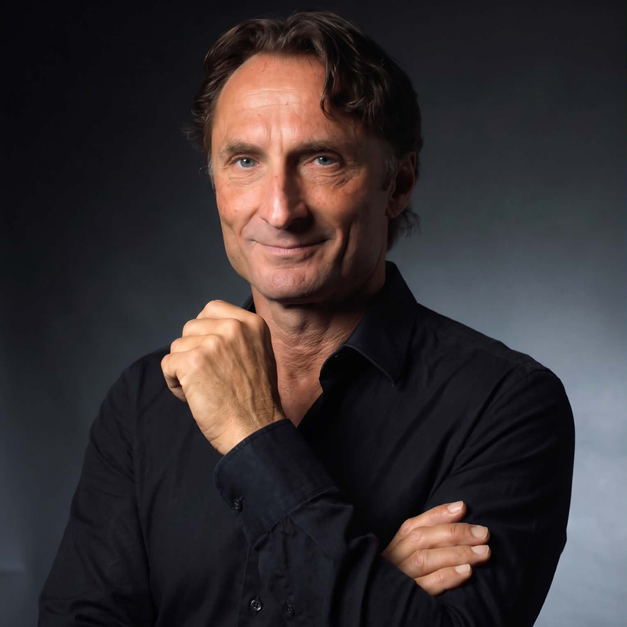

Dan Katz
Leg. psykolog och leg. psykoterapeut.
Varför vi finns
Att bekänna sig till vetenskapliga principer kostar ingenting. Att tillämpa dem gör det.
Det svåra är aldrig homeopaten eller astrologen. Det svåra är när principerna pekar mot den egna yrkeskåren, den egna redaktionen, den egna vännen, den egna politiska hemvisten. Det är där de flesta tystnar, och det är där tystnaden gör mest skada: varje undantag som beviljas av hänsyn urholkar rätten att åberopa principen nästa gång.
Vi tänker inte bevilja några undantag. Inte åt andra, och framför allt inte åt oss själva.
Vi försvarar inte varje påstående som görs i vetenskapens namn. Vi försvarar processen som skiljer det vi tror från det vi faktiskt vet.
02 Manifest
Aldrig hos den som frågar. Att en invändning är obekväm gör den inte besvarad.
Metod, källor och resonemang redovisas så öppet att någon annan kan gå samma väg. Leder vägen henne till samma slutsats har påståendet stärkts. Leder den henne någon annanstans har vi fått veta något vi behövde veta. Slutsatser utan redovisad väg är åsikter i högtidsdräkt.
Tvärsäkerheten ska svara mot underlaget. Svagheter i underlaget ska redovisas av den som framför påståendet, inte upptäckas av den som granskar det. Att låta granskaren hitta bristen först är sällan ett förbiseende och ofta ett val.
Titel, tjänsteställning, tradition, decennielång vänskap, god avsikt och tillhörighet till rätt läger är inte argument. De är omständigheter. En omständighet har aldrig gjort ett påstående sant.
Där objektiv kunskap finns följer vi den. Där den inte finns får var och en tycka precis vad den vill, men får då inte åberopa vetenskapen, forskarkonsensus eller "experterna" som stöd. Att låna vetenskapens auktoritet till en fråga den inte kan avgöra är den vanligaste och mest allmänt accepterade formen av ohederlighet i vår tid.
Det kräver något av oss: modet att kalla en åsikt för en åsikt, en värdering för en värdering och en tro för en tro. Ingen av dem är något att skämmas för. Att klä ut dem till kunskap är det.
Allt vi säger gäller tills bättre underlag visar något annat. Vi räknar med att ha fel om något. Vi vill veta vad.
Vår utgångspunkt
I en tid av snabba svar väljer vi den långsamma prövningen. Inte för att tvekan är ett mål — utan för att tillit måste förtjänas.
Nyfikenhet utan godtrogenhet.
Övertygelse utan dogmatism.
03 Signatärer

Leg. psykolog och leg. psykoterapeut.

Epidemiolog och vetenskaplig rådgivare med tre decennier inom folkhälsa och evidensbaserad policy.

Professor i teknikhistoria och prisbelönt folkbildare i frågor om innovation, risk och samhällsansvar.

Molekylärbiolog och akademiledamot med lång erfarenhet av forskningsetik och öppen vetenskap.
Samtalet börjar här
Vill du bidra, samarbeta eller bjuda in signatärerna till ett offentligt samtal?
Skriv till oss